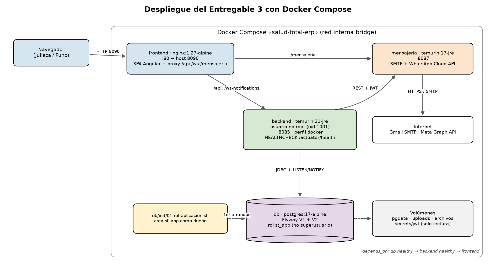
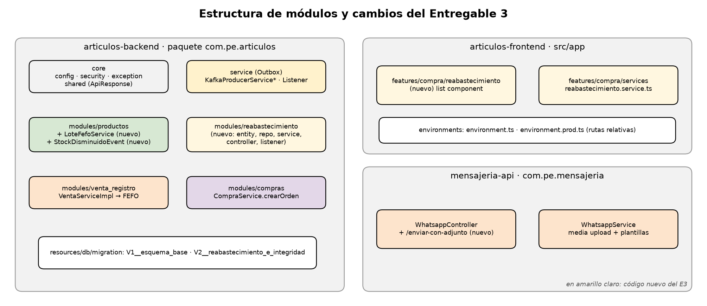
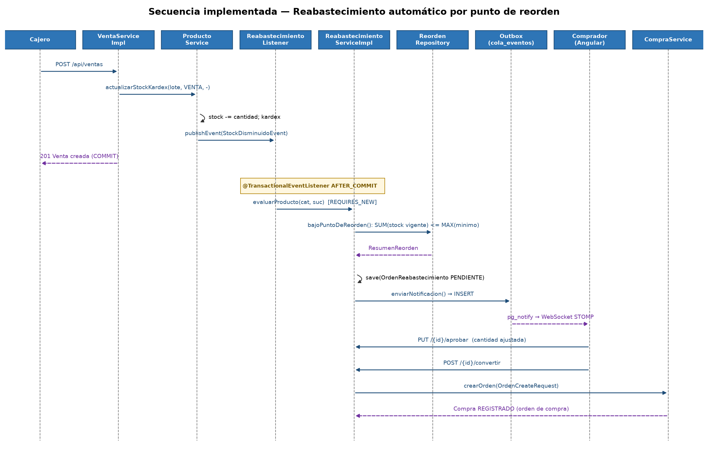
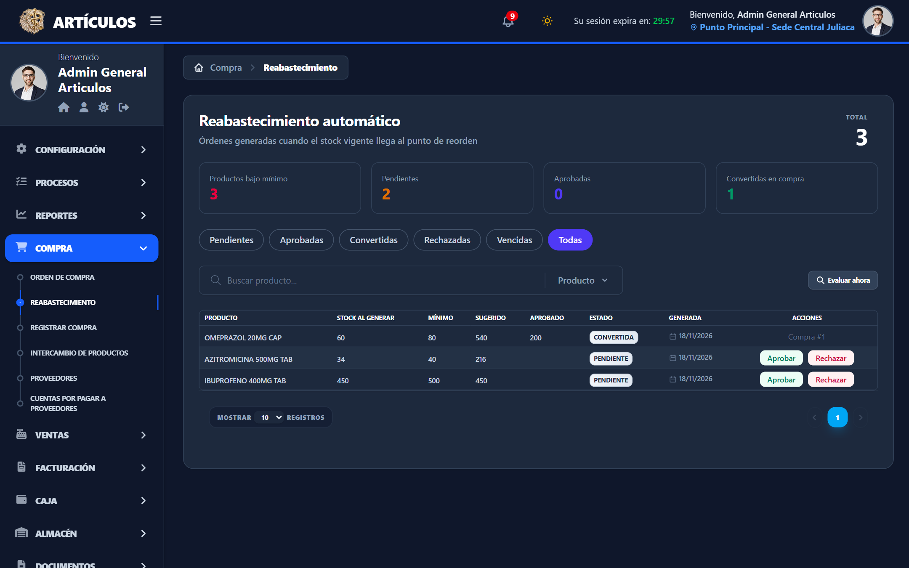
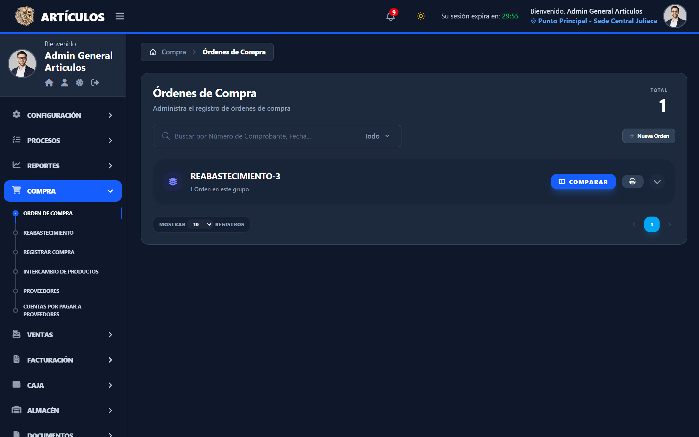
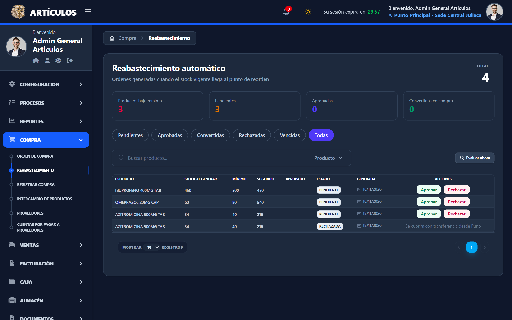
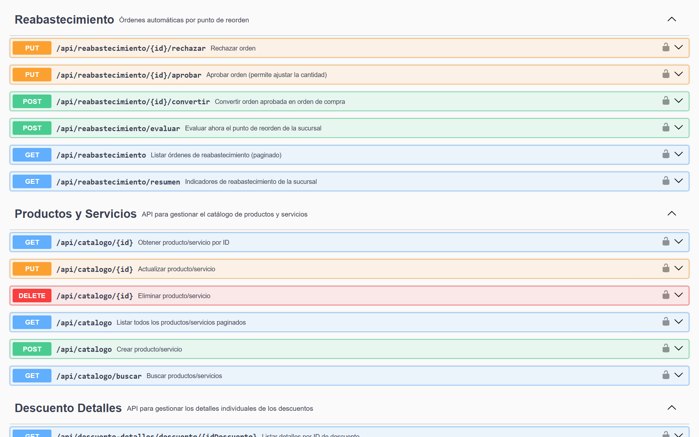
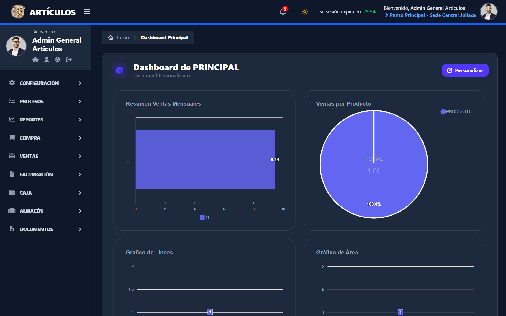
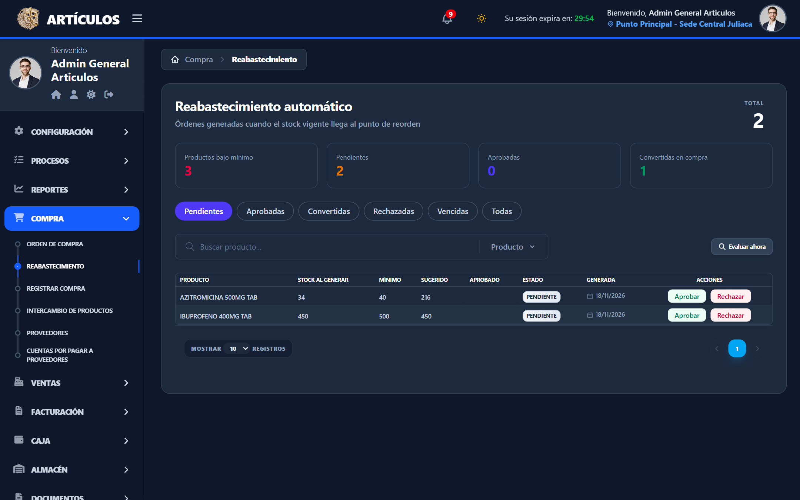
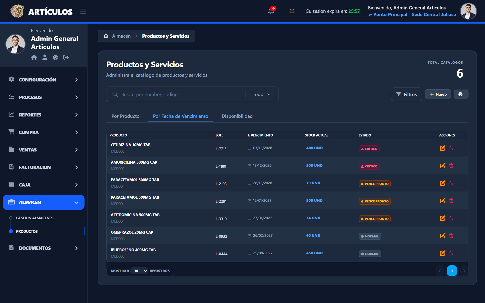

CE023 - S2 - E3: Sistema de Software Funcional Integrado¶
ENTREGABLE 3
Sistema de Software Funcional Integrado
(Alineado con CE023)
ERP «Articulos» — Salud Total SAC: FEFO, reabastecimiento automático y despliegue en contenedores

| Título del sistema | ERP «Articulos» — Salud Total SAC (backend, frontend y mensajeria-api) |
|---|---|
| Nombre del estudiante | Gutierrez Anco Yesenia Alejandra Turpo Cauna Jose Samuel Quispe Huarilloclla Jhosef Antony |
| Semestre | 10 |
| Curso | CE023 — Sistema de Software Funcional Integrado |
| Fecha | Noviembre de 2026 |
| Repositorio / despliegue | Código: Entregable3_Codigo_Fuente.zip (git local, rama main) · Despliegue: docker compose → http://localhost:8090 |
Resumen Ejecutivo¶
Salud Total SAC, cadena de farmacias con clínica ambulatoria en Juliaca y Puno, pierde dinero por dos causas que el Business Case de CE01 cuantificó: quiebres de stock por reposición manual y mermas por vender o almacenar lotes que vencen. Este entregable implementa, sobre el ERP real «Articulos», la solución de software diseñada en los Entregables 1 y 2 para atacar ambas causas, y la deja desplegable con un solo comando.
Qué resuelve. (1) FEFO obligatorio: el backend rechaza la venta de un lote vencido y exige vender primero el lote que vence antes (RF-24, RN-10, RN-11). (2) Reabastecimiento automático: cada salida de stock dispara, después de confirmada la transacción, la evaluación del punto de reorden; si el stock vigente queda en o bajo el mínimo se crea una orden pendiente, se notifica en tiempo real al comprador y éste la aprueba, rechaza o convierte en una orden de compra del módulo existente (RF-26 a RF-28, RN-12, RN-13).
Cómo se usa. El cajero vende como siempre desde la pantalla de ventas; el sistema le indica qué lote debe salir. El comprador abre Compra → Reabastecimiento, revisa los indicadores y atiende las órdenes con un clic. El administrador despliega todo con docker compose up y accede en http://localhost:8090.
Resultados verificados. La colección de pruebas de la API pasa 19 de 19 peticiones y 41 de 41 aserciones contra el despliegue en contenedores, sobre una base creada desde cero por Flyway. Las pruebas detectaron y permitieron corregir un defecto previo (el login con contraseña incorrecta respondía HTTP 500). Además se eliminaron las contraseñas de los archivos de configuración, se activó el versionado del esquema y la aplicación dejó de conectarse como superusuario.
| Indicador | Valor |
|---|---|
| Código nuevo | 19 clases Java (808 líneas), 1 pantalla Angular (384 líneas), 1 migración Flyway de negocio |
| Código modificado | 18 archivos (+204 / −138 líneas): venta, productos, seguridad, mensajería y configuración |
| Endpoints nuevos | 7 en /api/reabastecimiento, 1 FEFO en /api/productos, 1 en mensajeria-api |
| Pruebas automatizadas | Postman: 19 peticiones, 41 aserciones, 0 fallos (local y Docker) |
| Despliegue | 4 contenedores (db, backend, mensajeria, frontend), todos healthy |
Sección 1: Arquitectura e Integración¶
1.1 Arquitectura general del sistema¶
El sistema mantiene la arquitectura documentada en el E1: una SPA Angular, un backend monolítico modular en Spring Boot que expone una API REST con JWT firmado con RSA, un microservicio de mensajería y PostgreSQL como almacén y canal de eventos (patrón Outbox con LISTEN/NOTIFY). En el E3 se agregan el módulo de reabastecimiento, la validación FEFO, el proxy Nginx y el despliegue en contenedores.

Figura 1.1 — Contenedores del sistema (C4 nivel 2).
1.2 Capas, módulos y componentes¶
El backend sigue la arquitectura por capas del proyecto (Controller → Service → Repository → Entity, con DTO y MapStruct). La figura 1.2 resume los módulos que intervienen en el E3 y marca el código nuevo.

Figura 1.2 — Módulos involucrados y código nuevo del Entregable 3.
| Componente | Capa | Responsabilidad |
|---|---|---|
| LoteFefoService | Servicio (productos) | Lista lotes en orden FEFO y valida cada salida: rechaza vencidos y lotes que no vencen primero (configurable con ventas.fefo.estricto). |
| VentaServiceImpl | Servicio (ventas) | Invoca validarSalida() por cada línea tras el control de stock existente. |
| ProductoService | Servicio (productos) | Tras actualizar stock y kardex publica StockDisminuidoEvent. |
| ReabastecimientoListener | Infraestructura | @TransactionalEventListener(AFTER_COMMIT) y tarea programada horaria (evaluación y vencimiento a 72 h). |
| ReabastecimientoServiceImpl | Servicio | Genera, aprueba, rechaza, vence y convierte órdenes; notifica por el Outbox. |
| ReordenRepository | Repositorio | Consulta agregada: stock vigente por producto y sede frente al punto de reorden. |
| ReabastecimientoController | Web | 7 endpoints REST con @PreAuthorize (COMPRA_LEER / COMPRA_CREAR). |
| reabastecimiento-list | Frontend | Pantalla con indicadores, filtros por estado, búsqueda, paginación y acciones. |
1.3 Integración con la base de datos¶
La integración es por JPA/Hibernate y, desde este entregable, el esquema queda versionado con Flyway. V1__esquema_base.sql es el esquema real extraído en el E2; en bases existentes Flyway lo registra como baseline y sólo aplica V2. En una base vacía (Docker) ejecuta ambas y Hibernate valida el resultado (ddl-auto=validate).
CREATE UNIQUE INDEX IF NOT EXISTS ux_orden_reab_abierta
ON orden_reabastecimiento (id_catalogo, id_sucursal)
WHERE estado IN ('PENDIENTE', 'APROBADA');
CREATE INDEX IF NOT EXISTS idx_kardex_ultimo_mov
ON kardex (id_catalogo, id_sucursal, fecha DESC, id_articulo_kardex DESC);
CREATE INDEX IF NOT EXISTS idx_producto_fefo
ON productos (id_catalogo, id_sucursal, fecha_venc);
Código 1.1 — Extracto de V2: una sola orden abierta por producto y sede (índice parcial), índice del kardex e índice FEFO.
La consulta que decide el reabastecimiento agrega todos los lotes del producto en la sede, excluye los vencidos y compara con el mínimo:
@Query("SELECT p.idCatalogo AS idCatalogo, "
+ "SUM(CASE WHEN p.fechaVencimiento IS NULL OR p.fechaVencimiento >= :hoy THEN p.stock ELSE 0
END) AS stockVigente, "
+ "MAX(p.stockMinimo) AS stockMinimo, MAX(p.stockMaximo) AS stockMaximo, "
+ "MAX(p.idProveedor) AS idProveedor, MAX(p.precioCompra) AS precioCompra "
+ "FROM Producto p WHERE p.idSucursal = :idSucursal AND (:idCatalogo IS NULL OR p.idCatalogo =
:idCatalogo) "
+ "GROUP BY p.idCatalogo "
+ "HAVING MAX(p.stockMinimo) > 0 AND "
+ "SUM(CASE WHEN p.fechaVencimiento IS NULL OR p.fechaVencimiento >= :hoy THEN p.stock ELSE 0
END) \<= MAX(p.stockMinimo)")
List\<ResumenReorden> bajoPuntoDeReorden(@Param("idSucursal") Long idSucursal,
@Param("idCatalogo") Long idCatalogo,
@Param("hoy") LocalDate hoy);
Código 1.2 — ReordenRepository.bajoPuntoDeReorden.
1.4 Integración con servicios y APIs¶
-
Outbox y tiempo real: las órdenes generadas usan el KafkaProducerService existente (nombre heredado), que inserta en cola_eventos; el trigger trg_notify_evento_insert emite pg_notify y el backend las entrega por WebSocket/STOMP a la campana de notificaciones.
-
Módulo de compras: la conversión reutiliza CompraService.crearOrden(), por lo que la orden aparece en Compra → Órdenes de compra sin duplicar lógica.
-
mensajeria-api: se agregó POST /api/v1/mensajes/whatsapp/enviar-con-adjunto (sube el PDF a la API de medios de Meta y lo envía como encabezado de la plantilla), que el backend ya invocaba y no existía; /enviar ahora acepta plantillas.
-
Proxy Nginx: el frontend de producción usa rutas relativas (/api, /ws-notifications, /mensajeria) que Nginx enruta a cada contenedor.
Sección 2: Funcionalidad del Sistema¶
2.1 Flujos principales implementados¶
Flujo 1 — Venta con FEFO. Al registrar una venta, por cada línea el backend obtiene el lote elegido, valida el stock y luego LoteFefoService.validarSalida(): si el lote está vencido responde 400 «El lote … venció el …»; si existe otro lote del mismo producto en la sede que vence antes y tiene stock suficiente responde 400 «Por FEFO debe venderse primero el lote …».
@Transactional(readOnly = true)
public void validarSalida(Producto lote, BigDecimal cantidad) {
LocalDate hoy = LocalDate.now();
if (lote.getFechaVencimiento() != null && lote.getFechaVencimiento().isBefore(hoy)) {
log.warn("Intento de vender el lote vencido {} del producto {}", lote.getNroLote(),
lote.getIdProducto());
throw new ValidationException("El lote " + descripcion(lote) + " venció el " +
lote.getFechaVencimiento()
+ " y no puede venderse.");
}
if (!fefoEstricto || lote.getIdCatalogo() == null || lote.getIdSucursal() == null) {
return;
}
Optional\<Producto> primero = productoRepository.findLotesFefo(lote.getIdCatalogo(),
lote.getIdSucursal(), hoy).stream()
.filter(l -> !l.getIdProducto().equals(lote.getIdProducto()))
.filter(l -> venceAntes(l, lote))
.filter(l -> l.getStock() != null && l.getStock().compareTo(cantidad) >= 0)
.findFirst();
if (primero.isPresent()) {
Producto debeSalir = primero.get();
log.warn("Venta del lote {} rechazada por FEFO: debe salir antes el lote {}", lote.getNroLote(),
debeSalir.getNroLote());
throw new ValidationException("Por FEFO debe venderse primero el lote " + descripcion(debeSalir)
+ " (vence el "
+ debeSalir.getFechaVencimiento() + ", stock " +
debeSalir.getStock().stripTrailingZeros().toPlainString() + ").");
}
}
Código 2.1 — Regla FEFO en LoteFefoService.validarSalida.
Flujo 2 — Reabastecimiento automático. La figura 2.1 muestra la secuencia tal como quedó implementada.

Figura 2.1 — Secuencia implementada del reabastecimiento automático.
| Estado | Cómo se llega | Acción disponible |
|---|---|---|
| PENDIENTE | Stock vigente ≤ mínimo y sin otra orden abierta (evento tras la venta, evaluación manual o tarea horaria) | Aprobar (con cantidad) o rechazar (con motivo) |
| APROBADA | El comprador aprueba | Generar orden de compra (proveedor habitual o indicado) |
| CONVERTIDA | Se crea la orden de compra | Consultar el número de compra |
| RECHAZADA | El comprador rechaza | — (el producto puede volver a generar orden) |
| VENCIDA | 72 h en PENDIENTE sin atención | — (se notifica) |
Tabla 2.1 — Estados de la orden de reabastecimiento (implementa el diagrama de estados del E1).
2.2 Gestión de usuarios, permisos y roles¶
Los endpoints nuevos reutilizan los permisos del sistema: lectura con COMPRA_LEER y acciones con COMPRA_CREAR (@PreAuthorize), y el menú se registró en la semilla con moduloRequerido COMPRA, de modo que sólo lo ve quien tiene acceso al módulo. Las acciones quedan auditadas con @CreatedBy/@LastModifiedBy (usuario_creacion, usuario_modificacion). Sin token la API responde 401/403, y con contraseña incorrecta, 401.
2.3 Evidencias funcionales¶

Figura 2.2 — Compra → Reabastecimiento en el despliegue Docker: indicadores, filtros y órdenes en distintos estados.

Figura 2.3 — La orden convertida aparece en el módulo existente de Órdenes de compra (grupo REABASTECIMIENTO-3).

Figura 2.4 — La misma pantalla en el entorno local, con una orden rechazada y su motivo.
=== 1. GET /api/productos/catalogo/1/sucursal/1/fefo (Paracetamol, Sede Central Juliaca)
orden 1 | lote L-2105 | vence 2026-12-28 | dias 40 | stock 79.0
orden 2 | lote L-2291 | vence 2027-01-12 | dias 55 | stock 500.0
=== 2. POST /api/ventas con el lote que vence despues (id 10)
status 400 | Error al crear venta: Por FEFO debe venderse primero el lote L-2105 (vence el 2026-12-28,
stock 79).
=== 3. POST /api/ventas con lote vencido de Puno (id 2)
status 400 | Error al crear venta: El lote L-7714 venció el 2026-11-13 y no puede venderse.
=== 4. POST /api/ventas con el lote FEFO (id 8)
Venta creada exitosamente | venta 2 B001-2
=== 5. POST /api/reabastecimiento/evaluar?idSucursal=2 (Puno)
2 órdenes generadas
#4 AMOXICILINA 500MG CAP | stock 18.0 \<= minimo 60.0 | sugerido 102.0 | PENDIENTE
#5 CETIRIZINA 10MG TAB | stock 0 \<= minimo 30.0 | sugerido 150.0 | PENDIENTE
=== 6. GET /api/reabastecimiento/resumen?idSucursal=2
{'pendientes': 2, 'aprobadas': 0, 'convertidas': 0, 'productosBajoMinimo': 2}
=== 7. Outbox: eventos generados (tabla cola_eventos)
id | topico | titulo | estado
----+------------------------+------------------------------------+-----------
5 | sistema.notificaciones | Orden de reabastecimiento generada | PROCESADO
4 | sistema.notificaciones | Orden de reabastecimiento generada | PROCESADO
3 | sistema.notificaciones | Orden de reabastecimiento generada | PROCESADO
2 | sistema.notificaciones | Orden de reabastecimiento generada | PROCESADO
(4 rows)
Evidencia 2.1 — Flujos ejecutados contra el despliegue Docker: FEFO, lote vencido, venta correcta, reabastecimiento y Outbox.

Figura 2.5 — Documentación OpenAPI del controlador de reabastecimiento.
Sección 3: Código y Diseño Técnico¶
3.1 Estructura del repositorio¶
articulos-e3/
├── articulos-backend/ Spring Boot 3.5.9 · Java 21
│ ├── src/main/java/com/pe/articulos/
│ │ ├── core/ config, security, exception, shared
│ │ ├── service/ Outbox (cola_eventos) y listeners
│ │ └── modules/ 28 módulos + reabastecimiento (nuevo)
│ ├── src/main/resources/db/migration/ V1__esquema_base, V2__reabastecimiento_e_integridad
│ └── Dockerfile
├── articulos-frontend/ Angular 20 · Tailwind 4 · nginx.conf · Dockerfile
├── mensajeria-api/ Spring Boot 3.2.4 · Java 17 · Dockerfile
├── db/init/01-rol-aplicacion.sh
├── pruebas/ postman/ · datos/datos_demo.sql · evidencias/
├── docker-compose.yml · .env.example · iniciar-docker.ps1
└── README.md
Código 3.1 — Estructura del repositorio entregado.
3.2 Patrones y buenas prácticas aplicadas¶
| Patrón / práctica | Dónde | Beneficio |
|---|---|---|
| Arquitectura por capas + DTO + MapStruct | Módulo reabastecimiento, LoteFefoMapper | Entidades no expuestas; mapeo generado en compilación |
| Eventos de dominio (Observer) | StockDisminuidoEvent + @TransactionalEventListener | Ventas no conoce al reabastecimiento; bajo acoplamiento |
| AFTER_COMMIT + REQUIRES_NEW | ReabastecimientoListener / evaluarProducto | Sólo se evalúa stock confirmado y la orden se guarda en su propia transacción |
| Transactional Outbox | Notificaciones de órdenes | Avisos sin pérdida aunque falle la entrega |
| Máquina de estados con guardas | exigirEstado() → 409 Conflict | Transiciones inválidas imposibles |
| Reutilización de servicios | CompraService.crearOrden | Una sola lógica de órdenes de compra |
| Configuración externa (12-factor) | application*.properties con \${VARIABLE} | Sin secretos en el código; mismo artefacto en todos los entornos |
| Migraciones versionadas | Flyway V1/V2 | Esquema reproducible y auditable |
3.3 Modularidad y desacoplamiento¶
El módulo de ventas no depende del reabastecimiento: ProductoService sólo publica un evento y el listener vive en el módulo nuevo. Si el reabastecimiento falla, la venta no se revierte, porque la evaluación ocurre después del commit y cualquier excepción se registra en el log. El fragmento siguiente muestra el punto de desacople:
@TransactionalEventListener(phase = TransactionPhase.AFTER_COMMIT)
public void alDisminuirStock(StockDisminuidoEvent evento) {
try {
reabastecimientoService.evaluarProducto(evento.idCatalogo(), evento.idSucursal());
} catch (Exception e) {
log.error("No se pudo evaluar el reabastecimiento del catálogo {} en la sucursal {}",
evento.idCatalogo(), evento.idSucursal(), e);
}
}
@Scheduled(cron = "\${reabastecimiento.cron:0 0 * * * *}")
public void evaluacionPeriodica() {
reordenRepository.sucursalesConPuntoDeReorden().forEach(reabastecimientoService::evaluarSucursal);
reabastecimientoService.vencerOrdenesSinAtencion();
}
Código 3.2 — ReabastecimientoListener: evento tras el commit y evaluación periódica.
Durante las pruebas se comprobó por qué REQUIRES_NEW es necesario: sin él, la orden se insertaba en una transacción ya finalizada y no se confirmaba. El defecto se detectó porque la orden automática no aparecía tras la venta, y se corrigió anotando evaluarProducto con Propagation.REQUIRES_NEW.
3.4 Manejo de errores y validaciones¶
| Situación | Mecanismo | Respuesta |
|---|---|---|
| Cantidad aprobada ≤ 0 o motivo vacío | Bean Validation (@Positive, @NotBlank, @Size) + @Valid | 400 con el detalle por campo |
| Lote vencido / no FEFO | ValidationException en LoteFefoService | 400 con el lote que debe salir |
| Orden inexistente | ResourceNotFoundException | 404 |
| Transición inválida (aprobar una rechazada) | ConflictException en exigirEstado() | 409 |
| Convertir sin proveedor | ValidationException | 400 «indique el proveedor» |
| Contraseña incorrecta | AuthException mapeada en GlobalExceptionHandler (corregido) | 401 (antes 500) |
| Fallo al evaluar tras la venta | try/catch en el listener + log | La venta se mantiene |
Root 12 Aprobar con cantidad inválida
PUT http://localhost:8085/api/reabastecimiento/3/aprobar [400 Bad Request, 595 B, 45 ms]
Pass Validación (400)
Pass Mensaje del campo
Root 13 Aprobar orden ajustando cantidad
PUT http://localhost:8085/api/reabastecimiento/3/aprobar [200 OK, 955 B, 41 ms]
Pass HTTP 200
Pass Queda APROBADA
Pass Guarda la cantidad
Root 14 No se puede rechazar una orden ya aprobada
PUT http://localhost:8085/api/reabastecimiento/3/rechazar [409 Conflict, 577 B, 38 ms]
Pass Conflicto (409)
Evidencia 3.1 — Validación 400, aprobación y conflicto 409 en la ejecución de Postman.
Sección 4: Despliegue e Instalación¶
4.1 Instrucciones de instalación¶
# 1. Configuración
cp .env.example .env # completar DB_ADMIN_PASSWORD, DB_PASSWORD y credenciales de mensajería
mkdir -p secrets/jwt # copiar private.pem y public.pem
# 2. Construir y levantar los cuatro servicios
docker compose up -d --build
# 3. (Opcional) datos de demostración de Salud Total
docker exec -i salud-total-erp-db-1 psql -U st_app -d clinica_db \< pruebas/datos/datos_demo.sql
# 4. Verificar
curl http://localhost:8085/actuator/health # {"status":"UP"}
postman collection run pruebas/postman/E3_SaludTotal.postman_collection.json
Código 4.1 — Instalación con Docker Compose (detalle en README.md).
4.2 Configuración requerida¶
| Variable | Uso | Por defecto |
|---|---|---|
| DB_URL, DB_USER, DB_PASSWORD | Conexión a PostgreSQL (rol de aplicación) | local: clinica_db / postgres |
| DB_ADMIN_PASSWORD | Superusuario del contenedor db (sólo administración) | — |
| JWT_PRIVATE_KEY_PATH / JWT_PUBLIC_KEY_PATH | Llaves RSA (classpath: o file:) | classpath:certs/*.pem |
| VENTAS_FEFO_ESTRICTO | Exigir FEFO en la venta | true |
| CORS_ALLOWED_ORIGINS | Orígenes permitidos por la API | http://localhost:4200,4205 |
| MENSAJERIA_API_URL | URL del microservicio de mensajería | http://localhost:8087 |
| MAIL_*, WHATSAPP_* | Credenciales de correo y WhatsApp | vacías |
Perfiles: local (desarrollo, ddl-auto=update), docker y supabase (ddl-auto=validate: el esquema sólo cambia con Flyway). Ningún archivo de configuración contiene contraseñas; el archivo .env y la carpeta secrets/ están excluidos del control de versiones.
4.3 Evidencia de despliegue y ejecución¶
Figura 4.1 — Topología del despliegue con Docker Compose.
PS> docker compose ps
SERVICE IMAGE STATUS PORTS
backend salud-total-erp-backend Up About a minute (healthy) 0.0.0.0:8085->8085/tcp,
[::]:8085->8085/tcp
db postgres:17-alpine Up 20 minutes (healthy) 0.0.0.0:5433->5432/tcp,
[::]:5433->5432/tcp
frontend salud-total-erp-frontend Up About a minute (healthy) 0.0.0.0:8090->80/tcp,
[::]:8090->80/tcp
mensajeria salud-total-erp-mensajeria Up 20 minutes 0.0.0.0:8087->8087/tcp,
[::]:8087->8087/tcp
PS> docker images
REPOSITORY TAG SIZE
salud-total-erp-frontend latest 86.3MB
salud-total-erp-backend latest 649MB
salud-total-erp-mensajeria latest 475MB
PS> curl http://localhost:8085/actuator/health
{"status":"UP"}
PS> psql (db): historial de Flyway en la base creada desde cero
version | description | installed_by | instalado | ms | success
---------+-------------------------------+--------------+---------------------+-----+---------
1 | esquema base | st_app | 2026-11-18 21:51:40 | 675 | t
2 | reabastecimiento e integridad | st_app | 2026-11-18 21:51:40 | 38 | t
(2 rows)
PS> psql (db): rol de la aplicación y dueño de las tablas
rolname | superusuario | crea_bd
----------+--------------+---------
postgres | t | t
st_app | f | f
(2 rows)
tableowner | tablas
------------+--------
st_app | 85
(1 row)
Evidencia 4.1 — Contenedores healthy, imágenes, Flyway sobre base vacía y rol de aplicación sin superusuario.

Figura 4.2 — Sistema servido por Nginx en http://localhost:8090 con las sedes de Salud Total.
Tabla 4.1 — Resultado de la colección Postman contra el despliegue Docker.
| Prueba | HTTP | Aserciones |
|---|---|---|
| 01 Health del backend | 200 | 2/2 |
| 02 Login con credenciales inválidas | 401 | 2/2 |
| 03 Login correcto | 200 | 2/2 |
| 04 Endpoint protegido sin token | 403 | 1/1 |
| 05 Lotes FEFO de Paracetamol en Juliaca | 200 | 6/6 |
| 05b Lotes vencidos en Puno | 200 | 2/2 |
| 05c Abrir caja chica | 200 | 1/1 |
| 05d Crear proveedor | 201 | 1/1 |
| 06 Venta saltándose el lote FEFO | 400 | 2/2 |
| 07 Venta de un lote vencido | 400 | 2/2 |
| 08 Venta del lote que vence primero | 201 | 2/2 |
| 09 Evaluar punto de reorden en Juliaca | 200 | 2/2 |
| 10 Segunda evaluación no duplica órdenes abiertas | 200 | 1/1 |
| 11 Listar órdenes pendientes de Juliaca | 200 | 4/4 |
| 12 Aprobar con cantidad inválida | 400 | 2/2 |
| 13 Aprobar orden ajustando cantidad | 200 | 3/3 |
| 14 No se puede rechazar una orden ya aprobada | 409 | 1/1 |
| 15 Convertir en orden de compra | 200 | 3/3 |
| 16 Resumen de reabastecimiento | 200 | 2/2 |
Anexos¶
Anexo A: Repositorio fuente¶
Se entrega Entregable3_Codigo_Fuente.zip con el repositorio completo (sin node_modules, target, .env ni secrets). Es un repositorio git local independiente del repositorio de la empresa: el trabajo del curso se hizo en una copia para no alterar la rama principal de producción.
Anexo B: Manual técnico breve¶
El archivo README.md del repositorio contiene: componentes y puertos, novedades del E3, ejecución con Docker y en local, variables de entorno y cómo ejecutar las pruebas. En Windows Insider, si Docker Desktop no inicia por sockets bloqueados («rename … .sock.stale»), se usa iniciar-docker.ps1.
| Endpoint | Método | Permiso | Descripción |
|---|---|---|---|
| /api/productos/catalogo/{c}/sucursal/{s}/fefo | GET | autenticado | Lotes vigentes en orden FEFO |
| /api/reabastecimiento | GET | COMPRA_LEER | Órdenes paginadas (estado, búsqueda) |
| /api/reabastecimiento/resumen | GET | COMPRA_LEER | Indicadores de la sede |
| /api/reabastecimiento/evaluar | POST | COMPRA_CREAR | Evaluar ahora el punto de reorden |
| /api/reabastecimiento/{id}/aprobar | PUT | COMPRA_CREAR | Aprobar con cantidad |
| /api/reabastecimiento/{id}/rechazar | PUT | COMPRA_CREAR | Rechazar con motivo |
| /api/reabastecimiento/{id}/convertir | POST | COMPRA_CREAR | Generar orden de compra |
| /api/v1/mensajes/whatsapp/enviar-con-adjunto | POST | JWT | Plantilla de WhatsApp con PDF (mensajeria-api) |
Anexo C: Capturas de funcionamiento¶

Figura C.1 — Órdenes pendientes con acciones Aprobar / Rechazar.

Figura C.2 — Productos por fecha de vencimiento (lotes cargados para las pruebas FEFO).
Anexo D: Trazabilidad con el E1 y el E2¶
| Requerimiento (E1) | Estado en E1 | Estado en E3 | Evidencia |
|---|---|---|---|
| RF-24 FEFO en la venta | Parcial | Implementado | Código 2.1, Evidencia 2.1, pruebas 05–08 |
| RF-26 Punto de reorden | Implementado | Implementado (usa stock vigente) | Código 1.2 |
| RF-27 Orden automática | TO-BE | Implementado | Figura 2.1, pruebas 09–11 |
| RF-28 Aprobar / rechazar / convertir | TO-BE | Implementado | Figuras 2.2–2.3, pruebas 12–15 |
| RF-33 WhatsApp con PDF | Parcial (endpoint inexistente) | Endpoint implementado | Sección 1.4 |
| RN-12 Una orden abierta | — | Índice parcial + validación | Código 1.1, prueba 10 |
| RN-13 Vencimiento 72 h | — | Tarea programada | Código 3.2 |
| ADR-09 Secretos y Flyway (E1) / Hallazgos 1–2 (E2) | Pendiente | Implementado | Sección 4.2, Evidencia 4.1 |
Archivos del entregable¶
Otros